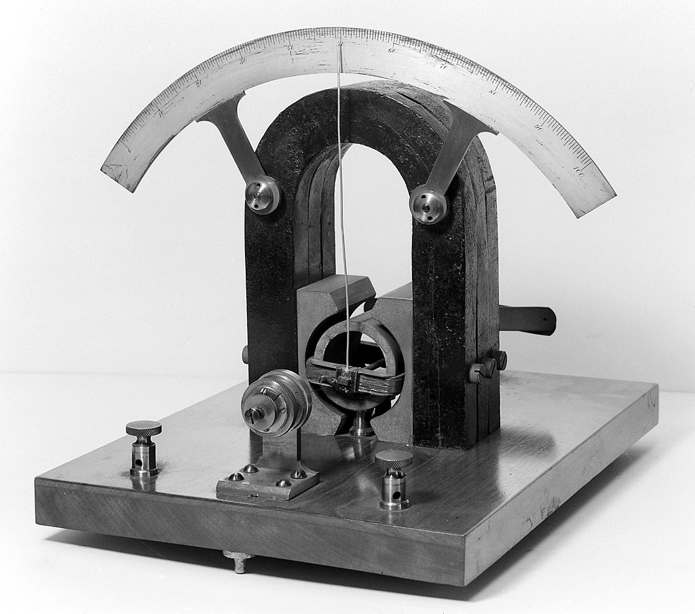
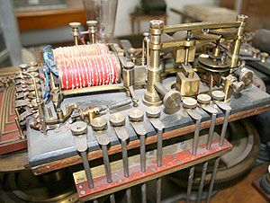
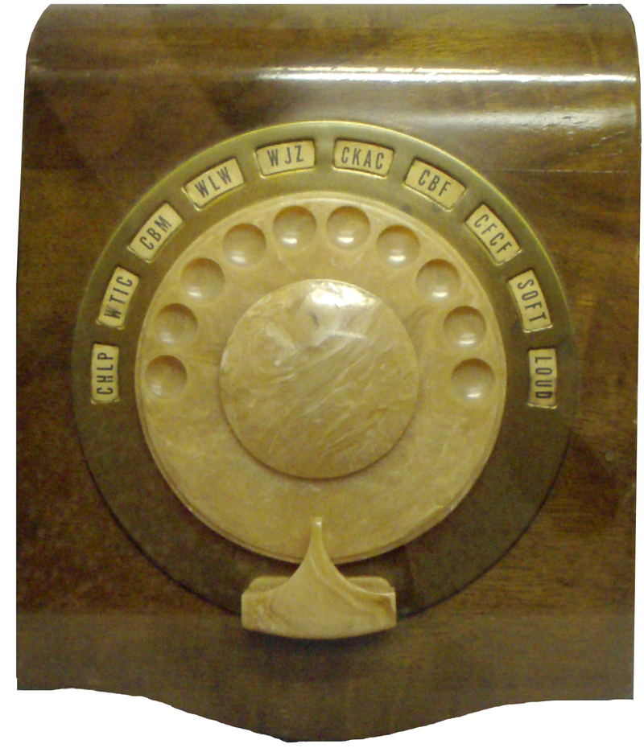
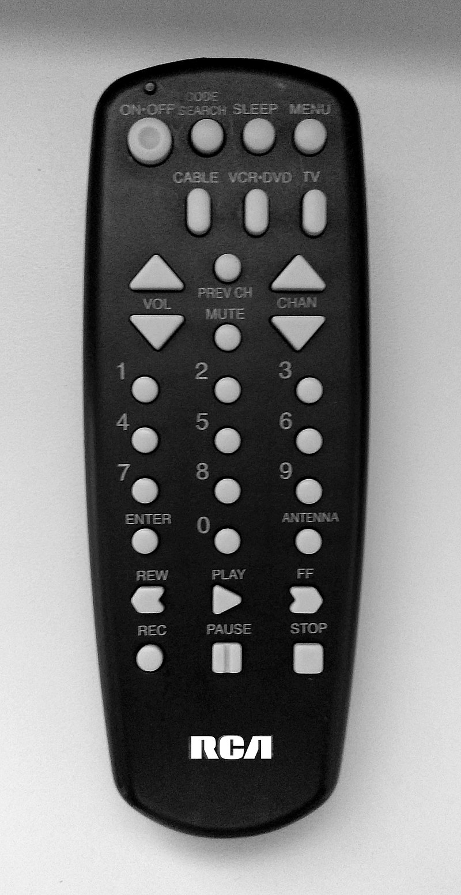

Tech: Now and Then

22 February 2021.

A basic modern television remote, which is what most TVs use nowadays (unless they're lost under the sofa or something)
A remote control is used a lot today. It's mostly used on a TV, vehicle, or even as far up as a robot that is on another planet! It's used to control things from a distance, which are useful when you want to remotely control something (wonder where it got its name?). But where did these devices get there start? When did we first learn to control something from a distance? And what was the first thing that was remote-controlled? Well, let's ask British physicist Oliver Lodge, who created the firs remote-controlled device.
A galvanometer, or an instrument that detects an electric current. This was the first device to be remotely controlled.
In 1894, Oliver Lodge, using a coherer (a primitive radio signal detector) was able to move a light when the coherer made an electronic impulse through the use of metals inside of it. There were a few other experiments afterward, including one where Jagadish Chandra Bose triggered a gun and sounded a bell through microwaves (not the cooking one) and Guglielmo Marconi/William Preece made a button in a box, that, when pressed, would trigger a bell without wires.
The next major advancement would come from Nikola Tesla, who was able to create a "Method of an Apparatus for Controlling Mechanism of Moving Vehicle or Vehicle" in 1898, or a remote for short. He demonstrated this through the usage of a boat that was able to be controlled without any wires, which another scientist was able to do 5 years later.
An image of the Telekino, the first remote that established a basic protocol for remotes.
Leonardo Torres Quevedo was the first person to establish the basic ways to build and have a remote control work, showing the world that things could be controlled from a distance through electricity. This kind of technology was used in the first remote-controlled model airplane, which flew in 1932. This was then attempted to be put into military use, which was able to create the Wasserfall Missle, but went unused due to being completed after the war.
An image of the Philco Mystery Control, which was completely wireless and relied on batteries.
On a completely different note, radio companies started to include remote controls with expensive models of radios. Most were connected completely via wire, but the Philco Mystery Control in 1939 was completely wireless. It was the first consumer electronics remote control, but it was also the first digital wireless remote with it using pulse-count modulation, or a way to represent analog via remote.
The first wireless TV remote was the "Flashmatic" in 1955, a remote that relied on shining a beam of light into a certain light detector. It wasn't very practical or useful, as it didn't take any special kinds of light so any light would work, and it had to be pointed extremely precisely to even work. A more effective version of this would be the "Zenith Space Command", a remote that was able to change channels and volume via ultrasonic frequencies. When the TV detected these sounds, it would change the volume or channel down/up. The major problem with these ultrasonic devices was that sometimes other sounds would be interpreted by these devices as signals, and some people could actually hear the sounds (including dogs).
An RCA controller, similar to the one that was invented in the 1970's.
The next advancement was using purely digital signals to change a TV's remote, which RCA did in 1970. This was done to replace analog control, which had dominated every TV controller until the remote came along. The final advancement would be with the Ceefax teletext service by the BBC, which made channels have 3-digit numbers that a user could flip to. Remotes started to be developed with number-pads, as they were much more efficient and easier to flip to channels a user knew. Most of these remotes were wired, as most people didn't know how to make it wireless. So, BBC got to talks with other wireless remote companies. This eventually led to remotes that used "infrared communication", so named by ITT, one of the major companies that worked on it.
Remotes have pretty much become stagnant since then. Some remotes use Bluetooth due to the general improved connectivity with things, but most still use infrared due to it being much cheaper. Bluetooth is mostly used on things that can't be directly pointed to all of the time or have a lot of latency, like a video game controller or a robot. So, until another major advancement is made, that's pretty much it for remote controllers.